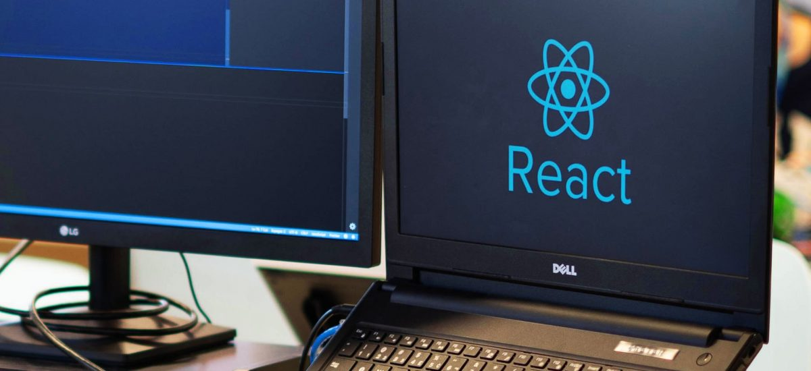

React: por que considerá-lo no seu projeto?

React é uma biblioteca JavaScript usada para criar interfaces de usuário (UI’s), que é mantida pelo Facebook.
Desde seu lançamento o React tem crescido consideravelmente entre os desenvolvedores e consequentemente no
mercado. Em pouco tempo o React já se tornou uma das bibliotecas JavaScript mais populares, se não a mais
popular.
Segundo o trends no GitHub e StackOverflow o React já ultrapassou outros famosos frameworks/libraries JavaScript
dos últimos 10 anos.
O que são API's, front-end e back-end? Conceitos de Desenvolvimento para não programadores
Se você é o CEO, comercial, marketing ou qualquer outra área de uma startup, que não seja a de desenvolvimento,
e tem dificuldades em entender o mundo da TI, esse texto foi escrito para você!
Muitas startups de tecnologia são idealizadas por pessoas que nunca escreveram uma linha de código na vida.
Essas pessoas geralmente dominam o mercado no qual querem atuar, porém, não possuem capacidade técnica para
desenvolver o produto que querem lançar no mercado.
JavaScript – 20 anos de história e construção da web

Você se lembra de alguns fatos que marcaram o ano de 1995? Pensando rapidamente, recordo que a Microsoft lançou
o Internet Explorer, dando início à “Guerra dos Browsers” contra o Netscape; teve também a criação da plataforma
mIRC para funcionar como um mecanismo de chat e troca de arquivos; na política brasileira, foi o começo do
governo de Fernando Henrique Cardoso; e, na música, foi o ano da Macarena (essa lembrança eu posso apagar da
minha memória,
rssss).